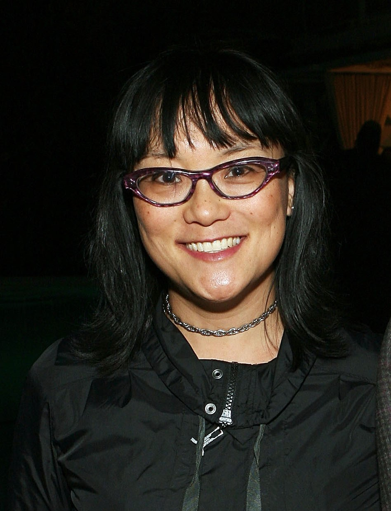

Mina Shum and Double Happiness (1994)

Personal Information
Movie Information
Behind-the-Scene
- Ethnicity: Chinese Canadian
- Occupation: Filmmaker, director, writer
- Birth: Hong Kong, 1966
- Education: University of British Columbia (BA); Canadian Film Centre (director's program)
- Residence: Hong Kong, Toronto, Vancouver
- Title: Double Happiness
- Where to watch: Tubi, Amazon
- Movie info: This film is a 1994 Canadian drama film directed by Mina Shum. It was the first feature directed by a Chinese Canadian Woman.
- Based on: This story is written by Mina Shum.
- Awards: Berlin International Film Festival Wolfgang Staudte Award, Genie Awards, Toronto International Film Festival, Torino International Festival of Young Cinema
- Genre: Comedy, Drama
- Theme: The film explores the theme of a young girl transitioning into womanhood, focusing
on her developing sexuality in the presence of a father figure. This situation is
challenging because it involves the discomfort of acknowledging sexual activity within
the family dynamic, where neither parents nor children are comfortable with the other's
sexual lives.
Source
- Cultural background: Both Mina and Sandra touch on the topic of cultural expectations, where their parents
may seek suitable partners for their children, reflecting societal pressures to marry
within the same ethnicity. But they care more about being in love.
Source
- Concept development: She talks about representation on screen in the end of this interview.
Source
- Concept development: Mina delves into the concept of leaving home and achieving independence, drawing from
her own experiences of leaving home at eighteen. She aims to develop this theme as
a model for young women, exploring the challenges and triumphs associated with stepping
out on one's own
Source
- Concept development: Mina Shum talks about the aim in her production: How do I authentically present myself
in a society that often does not want me? She mentions the feeling of being outcast.
She wants to use films to empower people to be more themselves.
Source
- Collaborator - Actor: How Mina persuaded Sandra to play Jade. Sandra thought she was not a good fit in the
beginning.
Source Listen to what the audience thinks
Listen to what the audience thinks
- Collaborator - Actor: Mina met Sandra in 1993. During During the shoot of "The Diary of Evelyn Lau," Mina
asked Sandra to read and audition for Jade.
Source
- Fund support: She mentioned that this was the first big-budget film she had ever worked on. $100
million.
Source
- Challenge: Mina Shum talks about how perceptions and stereotypes about who can be a director
have been a consistent challenge. These perceptions are often based on gender and
appearance, leading to assumptions that she can't be a director because she doesn't
fit the traditional image of one. She mentions that early in her career, her youthful
appearance made it even harder for people to take her seriously as a director.
Source
- Challenge: Mina is referencing experiences related to typecasting and representation in the
media. Connie Chung, as a prominent Asian American journalist, often became a point
of reference for Asian female roles in media.
Source
- Anecdote: Her father wrote a scene he wanted her to shoot in the film Double Happiness. The
scene was about their father-daughter relationship, not about her film. Though she
didn't include it, she was able to take care of her parents as they aged. She chose
a career that wasn't as stable as her parents had hoped, but her dream came true.
Source
- Anecdote: The first Asian-Canadian woman director. She felt grateful that it happened.
Source